Guest House Ops Hub — User Guide
This app is your single place to manage bookings, the calendar, guests, housekeeping, pricing, money, your team, your facilities, and even a network of trusted nearby properties. It works on a phone (it can be installed like an app) and on a computer. This guide walks through everything you’ll do, screen by screen.
- Getting started
- Today dashboard
- Calendar
- Taking a booking
- A booking’s details & check-in/out
- Payments & invoices
- Guests
- Housekeeping
- Inbox (OTA emails)
- Pricing & rates
- Finance
- Analytics
- Conflicts
- Channel feeds (iCal)
- All bookings (list)
- Escalations & Messages
- Team (Staff)
- Facilities — maintenance, stock, vendors, tours
- Complaints, reviews & groups
- Community network
- Settings
- Tips & FAQ
1Getting started
Logging in
Open the app’s web address and sign in with your email and password. Staying logged in keeps you signed in for about a month.

Who can see what (roles)
Each login has a role, set by the owner in Settings → Users & roles:
- Owner — everything, including money (Finance, Pricing, Analytics) and Settings.
- Reception — bookings, guests and day-to-day work, but not money or setup.
- Housekeeping — just Today and Cleaning.
Finding your way around
- On a phone: a bar along the bottom shows Today, Calendar, a raised + New booking button, Bookings, and More. Tap More for Guests, Housekeeping, Complaints, Staff, Needs you; the Facilities tools (Maintenance, Inventory, Vendors, Transport, Tours); Finance, Pricing, Analytics; the Community screens (Directory, Referrals, Trusted lists); Inbox, Messages, Escalations, Reviews; and Property setup and Help. Appearance, accent, density and the property switcher live in the Preferences (gear) menu, top-right.
- On a computer: the same destinations sit in a grouped sidebar down the left (Operate · Facilities · Business · Community · Review · Setup).
- The New button (top corner) starts a new booking from anywhere.

The phone menu. The big + in the middle = new booking. More opens everything else (Finance, Pricing, Inbox, Settings, Help…).

Tapping More opens this menu of all the other screens.

On a computer, the same destinations live in a sidebar down the left.
Make it feel right
Tap the moon/sun icon to switch dark / light mode. Open Preferences (the gear, or More → Preferences) to change the accent colour and display density (comfortable / compact). Your choices are remembered on that device.
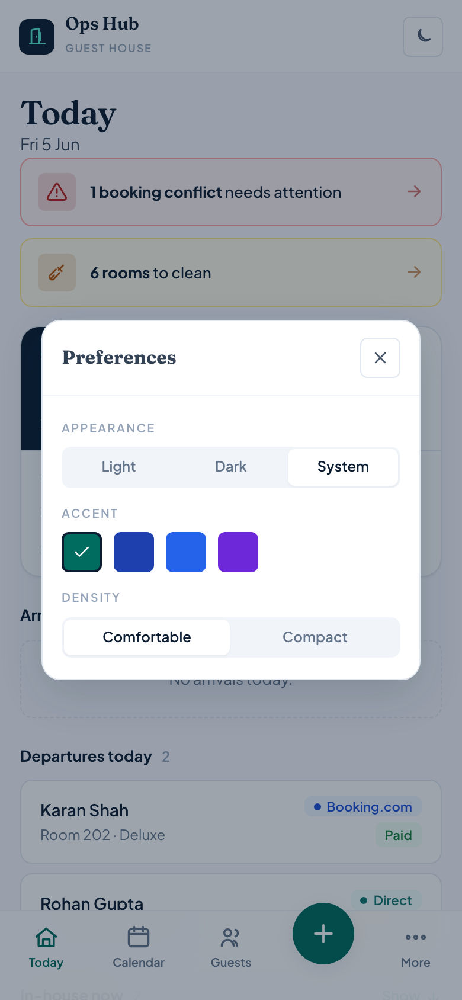
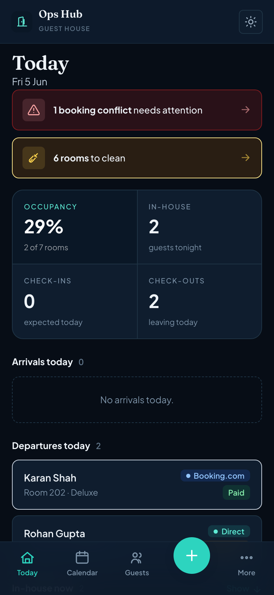
2Today dashboard

Your morning glance. It shows:
- Occupancy, In-house, Check-ins and Check-outs for today (the four tiles at the top).
- Check-ins today / Check-outs today — each guest shows Arrived ✓ / Awaiting and Departed ✓ / Due out so you can see who’s still expected.
- In-house now and Arrivals next 7 days.
- If anything needs attention, a coloured banner appears at the top — e.g. 3 rooms to clean or a booking conflict. Tap it to jump straight there.
- Pending payments (owners only) — a card showing the total still owed across confirmed bookings; tap it to open Finance.
Tap any guest row to open that booking.
Your day, start to finish
3Calendar

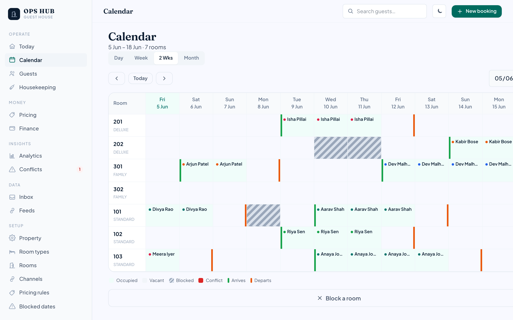
A grid of your rooms (rows) across dates (columns). Each cell is colour-coded:
| Colour | Meaning |
|---|---|
| Vacant | Room is free that night. |
| Occupied | A guest is staying — shows their name and the booking channel. Tap to open it. |
| Blocked | Held out of service (maintenance, repairs, owner use). |
| Conflict | A clash that needs fixing (e.g. a booking overlapping a block). Shown in red. |
| Arriving | A green edge marks the arrival day. |
| Departing | A clay edge marks the check-out day. |
Moving around
- Switch the span with Week / 2 Weeks / Month.
- Use ‹ / › to page back/forward, Today to return to now, or pick a date and press Go to jump anywhere.
- Swipe sideways to see more dates.
- Block a room takes you to where you can hold a room out of service (see Settings → Maintenance blocks).
4Taking a booking

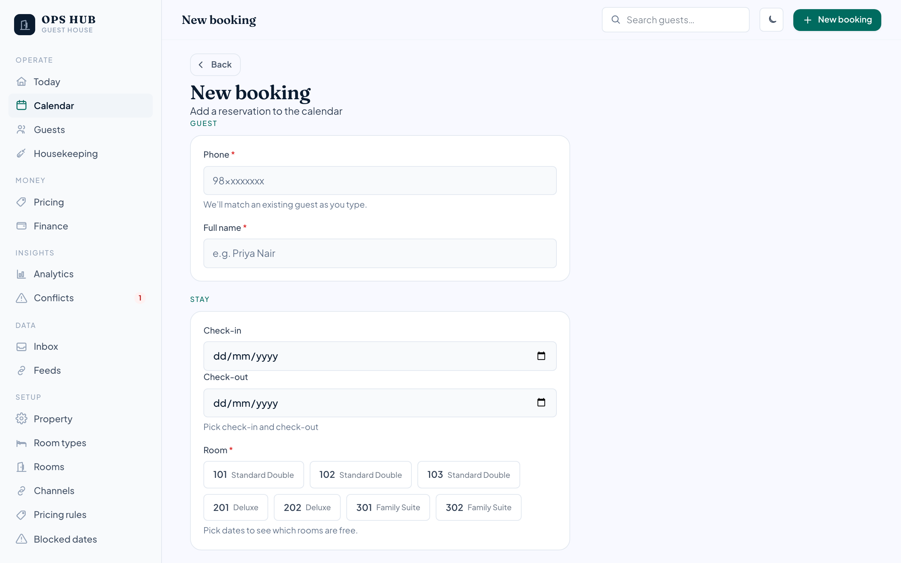
Tap New (or New booking). Fill in:
- Guest name & phone — if the phone matches an existing guest, their record is reused automatically.
- Channel (where the booking came from — Direct, WhatsApp, Booking.com, etc.) and Room.
- Check-in / Check-out dates, optional arrival time.
- Amount — if pricing rules are set up, a suggested price appears and pre-fills this for you (tap Use to accept, or type your own).
- Special requests — anything to remember.
- ID confirmation — tick the box confirming the guest has been told a valid ID will be collected at check-in. (The owner can relax or tighten this in Settings → Property — see below.)
5A booking’s details & check-in/out

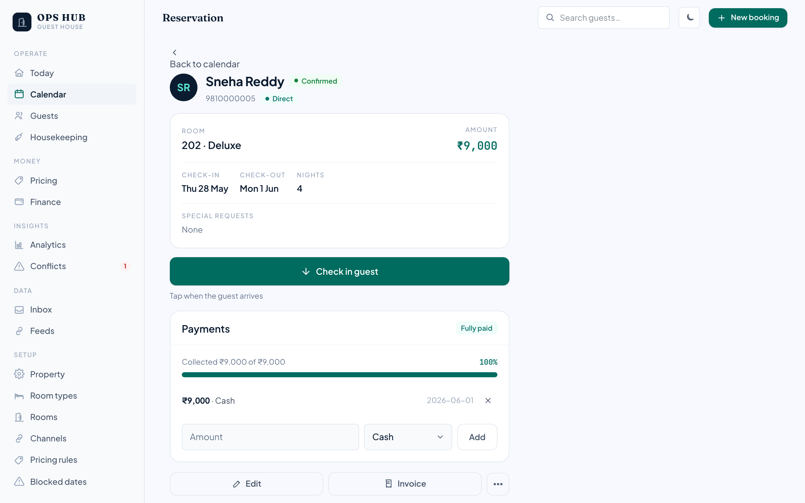
Tap any booking (from the calendar, Today, or a guest) to open it. You’ll see the room, channel, dates, nights, amount and special requests.
Check-in & check-out
The stay card moves through three steps:
- Not arrived yet → tap Check in when the guest arrives.
- In-house (shows the arrival time) → tap Check out when they leave.
- Checked out. Their room then appears in Housekeeping to be cleaned.
Made a mistake? Undo steps back one stage.
Other actions
Edit changes the booking; Invoice opens a printable bill (see next section); Cancel reservation cancels it and frees the dates for re-booking.
6Payments & invoices

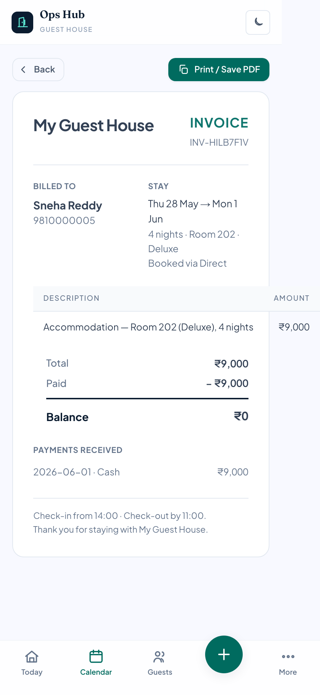
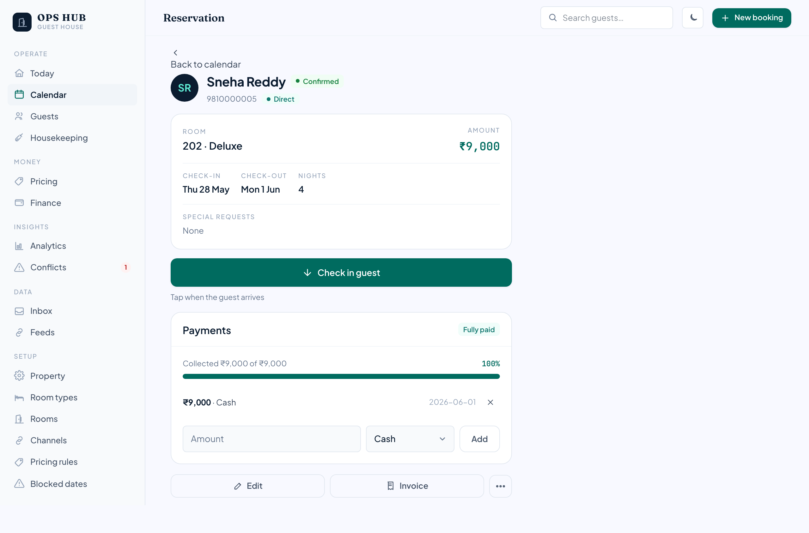
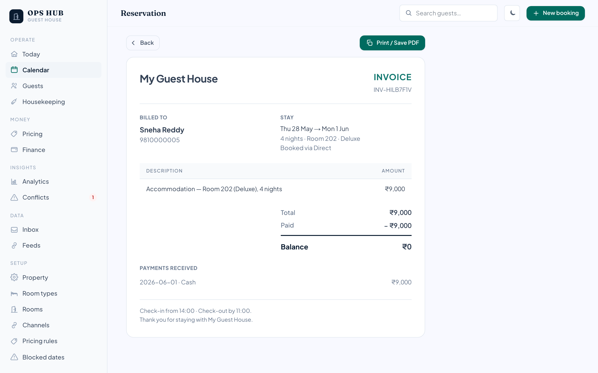
Recording payments
On a booking, the payments panel shows what’s been collected and the balance due. Add payment to record an amount and how it was paid (cash, UPI, card, bank, or collected by the OTA). Add several over time — a deposit now, the balance at check-in.
Advance deposit
If a booking expects an advance (you can set the amount on the booking form or when editing), the panel shows an advance status — Advance pending until enough advance-tagged payments are in, then Advance received. When you add a payment while an advance is owed, tick Mark as advance deposit so it counts toward it.
Verifying UPI / bank payments
When you choose UPI or bank transfer, a short verification checklist appears (e.g. confirm the sender name, that the money actually landed, and the reference). Enter the UTR / reference number and tick each item — the Add payment button stays disabled until all are checked. This is a guard against fake-payment scams.
Invoices
On a booking, tap Invoice for a clean bill with your property’s name/address, the stay, charges, payments and balance. Tap Print / Save PDF and choose “Save as PDF” in the print dialog to email or keep it.
7Guests

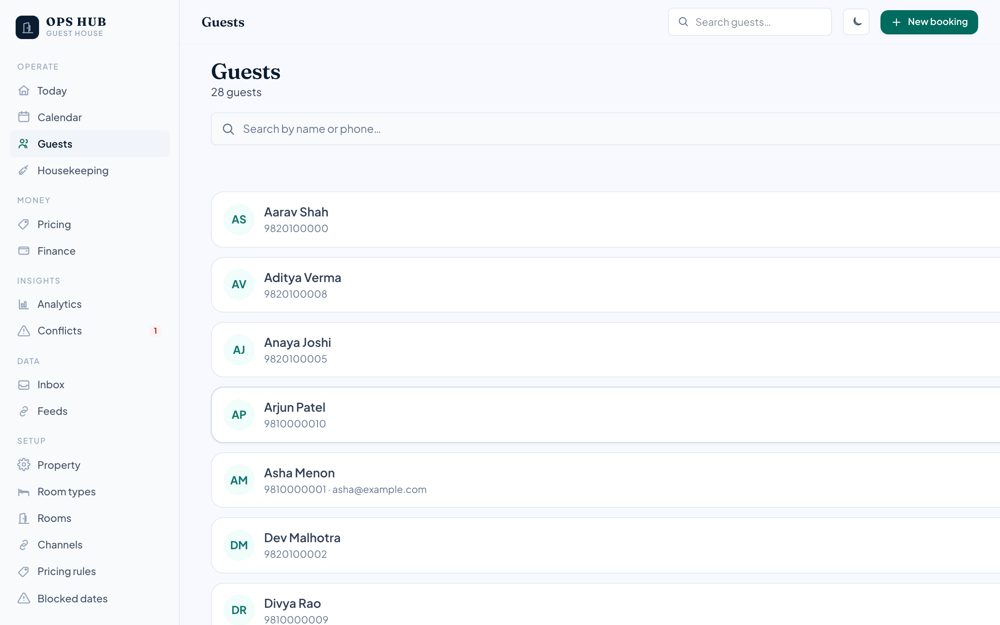
Search by name or phone. Each guest shows their number of stays, and badges for Repeat guests and Blocked (blacklisted) ones.
Open a guest to see:
- Stays, lifetime value (total spent), and a Reliability score derived from their no-shows. A guest who repeatedly fails to turn up shows a Repeat no-show badge, and the owner can raise a (shared) alert about them.
- Editable name, email, ID number, address, vehicle number, notes and preferences/tags.
- ID & verification — tick ID checked, ID photocopied, verification completed, and record the guest’s consent to storing their details. These are what the check-in gate looks for.
- Blacklist toggle with a reason — this is what warns you at booking time.
- ID document — if document storage is set up, upload a scan/photo of their ID (it’s kept private). If it isn’t set up, you’ll see a short note instead. Uploaded IDs can be set to auto-expire after a retention period (Settings → Property).
- Foreign-national details (C-Form) — a collapsible section for overseas guests: nationality, passport (number, issue date/place, expiry), visa (number, type, issue date/place, expiry), and port + date of entry into India plus purpose of visit. Required for the Form-C registration of foreigners; leave it closed/blank for Indian guests.
- Stay history — every past and upcoming booking; tap to open.
8Housekeeping

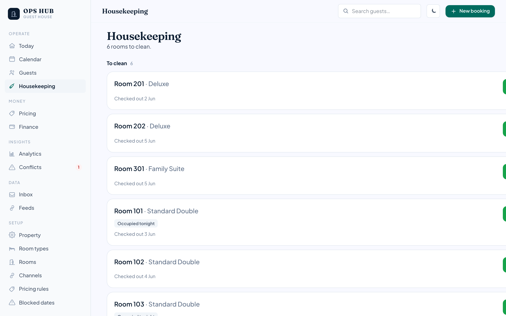
Two lists:
- To clean — rooms a guest has checked out of. A room with someone arriving today is flagged clean first. Tap Mark clean when done.
- Ready — clean rooms. If a room needs attention even without a checkout (dust, a spill, maintenance), tap Needs cleaning to move it to the To-clean list.
9Inbox (OTA emails)

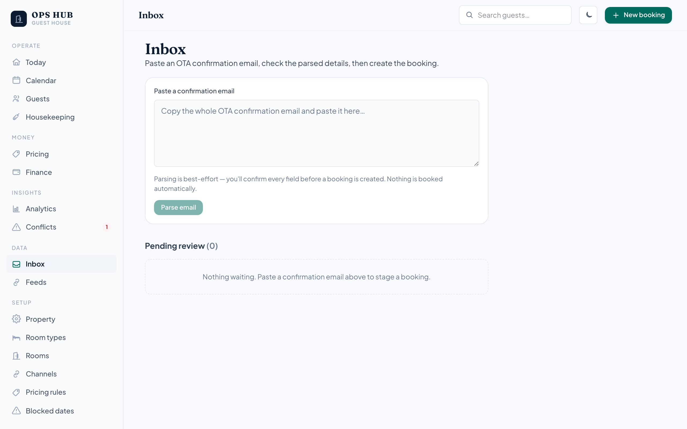
For bookings that arrive by email from Booking.com / Agoda / MakeMyTrip:
- Copy the whole confirmation email and paste it into the box, then tap Parse email.
- It appears under Pending review with the guest, dates and amount filled in as best it could.
- Check and correct the details, pick the room, then tap Create booking — it’s added to the calendar (and checked for clashes like any booking).
- Not a real booking? Dismiss it. Need to see the original? Show email.
10Pricing & rates
The Pricing screen shows a calendar of suggested nightly rates per room type. These are advisory — they help you decide and pre-fill new bookings; they are not sent to the OTAs.
- A rate in italics means a pricing rule adjusted it; a dot means you pinned a manual rate.
- Tap any cell to set a fixed price (an “override”) for that room type on that date, or to clear it.
- Set the rules themselves in Settings → Pricing rules (weekend uplift, season/holiday ranges, early-bird / last-minute, and busy-period pricing). Every suggestion stays within each room type’s floor and ceiling.
11Finance

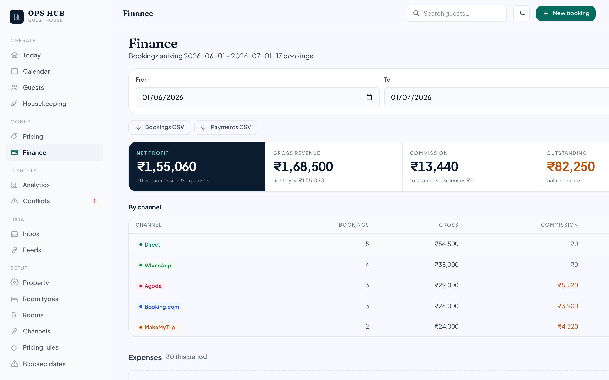
Pick a date range at the top. You’ll see four tiles: Net to you (what’s actually left, after commission and expenses), Gross revenue, Commission, and Outstanding (balances still owed).
- By channel — revenue, commission and net for each booking source.
- Expenses — tap Add expense to log a cost (utilities, salaries, supplies, etc.). These reduce net profit. Delete any with the ✕.
- Balances due — bookings still owing money; tap to open and record payment.
- Bookings CSV / Payments CSV — download spreadsheets for your accountant (respecting the date range).
12Analytics

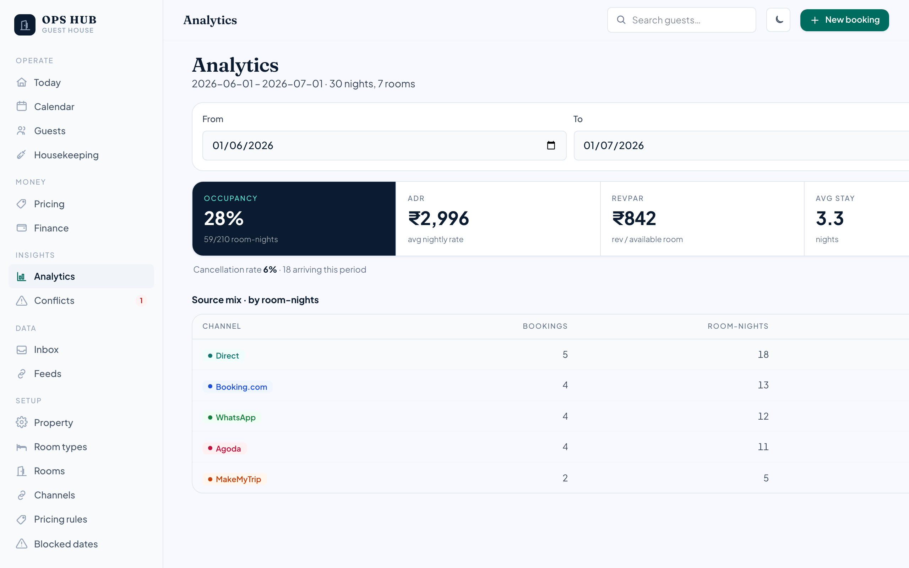
Performance over a period: occupancy, ADR (average nightly rate), RevPAR (revenue per available room), and your channel mix — useful for spotting trends and your best sources.
13Conflicts

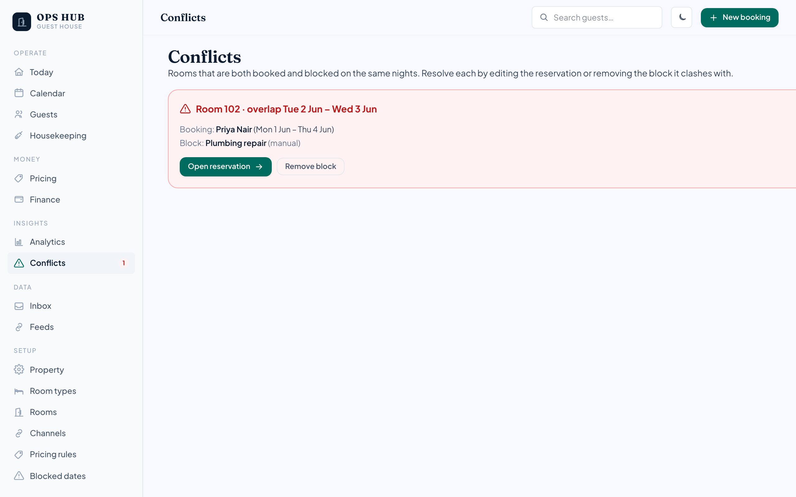
Lists any clashes that need a human decision — typically a manual block overlapping a stay. (Two confirmed bookings can never overlap; the app blocks that at the source.) Clear the list by removing the block or adjusting the booking.
14Channel feeds (iCal)

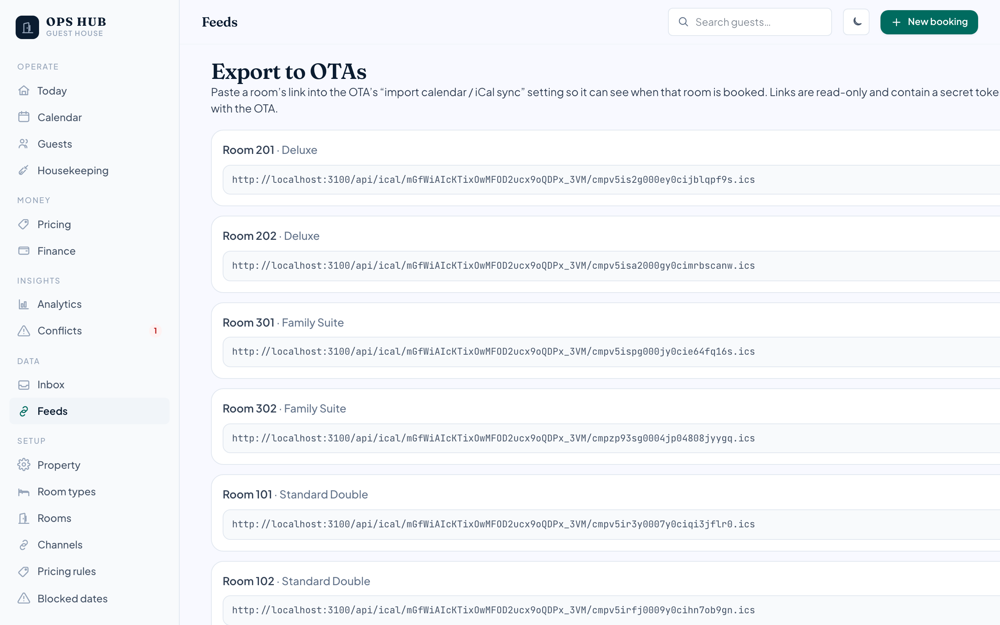
The Feeds screen keeps your calendars in sync with OTAs using free iCal links — no special accounts needed:
- Import: paste the iCal link an OTA gives you for a room. Their booked dates then show as blocked here, so you can’t double-book. Sync now refreshes immediately; it also refreshes automatically once a day.
- Export: each room has a private
.icslink you can give an OTA so they see your busy dates.
15All bookings (list)
The Bookings tab is a single searchable list of every booking — handy when you want to find one without hunting on the calendar.
- Search by guest name, phone, room, or channel — it filters instantly as you type.
- Filter with the tabs at the top: All / Upcoming / In-house / Past / Cancelled (each shows a count; cancelled and no-shows sit together under Cancelled).
- Each row shows the guest, channel, room, dates, nights and amount. Tap any row to open the booking.
- + New booking in the corner starts a fresh booking.
16Escalations & Messages
Escalations
When an AI assistant hits something it shouldn’t decide on its own — a special meal request, a complaint, a cab with no driver, or any action needing your approval (like cancelling a booking) — it files an escalation here instead of acting. The Escalations screen is your to-do queue:
- Items are tagged by who raised it (assistant / cab / front desk), category, and severity (a count badge shows open ones in the menu).
- Open one to read the guest’s original message and the assistant’s summary, then act — and move it through open → in progress → resolved.
- If it’s linked to a booking, you do the actual change (e.g. the cancellation) through the normal booking screen — the assistant never touches money or the calendar itself.
Messages
The Messages screen is an outbox — a log of every message the assistant or system has sent (or queued) to guests, with the channel (WhatsApp / SMS / email), who it went to, and the text.
The app already drafts guest messages automatically: a booking confirmation when a booking is made, a pre-arrival note with directions the day before check-in, and payment reminders for balances still due. Today these are logged here for your records (nothing is actually delivered yet). Once your tech team connects a messaging provider, the same drafts will send for real — with no change to how you work — and this screen will show their delivery status.
17Team (Staff)
The Staff screen (in More, or the sidebar) is your team in one place:
- Directory — add each person with a name, role (Reception, Housekeeping, Cook, Delivery…) and phone. Tap Edit on a row to change their details, Disable to retire them (keeps history), or delete.
- Shift roster — plan a shift: pick the person, a date, and start/end times. Remove a shift with the ✕.
- Attendance — for each active person, mark present / absent / leave for the day.
18Facilities — maintenance, stock, vendors, tours
Grouped under Facilities in the menu. Every list here has an Edit button on each row (change the details, then Save) and a delete.
Maintenance
- Requests — log what needs fixing with a priority (low/medium/high), who’s assigned, and a cost. Move each through Open → In progress → Done.
- Asset register — list equipment (geyser, generator, water pump…) with a “service every N days” schedule; the app flags one Service due when it’s time, and Serviced today resets it.
Inventory
Track supplies: add items with a unit and a low-stock level. Use In / Out to change the quantity as stock arrives or is used; anything at or below its level is flagged Low and listed in a banner at the top.
Vendors & procurement
- Vendors — a directory with an optional rating.
- Purchase orders — record an order and move it draft → ordered → received.
- Vendor payments — record what you’ve paid. A summary shows ordered / received / paid / outstanding.
Tours & activities
Offer sightseeing and treks: keep partners/guides (with a commission %), list the tours you offer (name, price, partner), and book a tour for a guest. A summary totals bookings, revenue and the commission owed to partners.
Transport
Keep a record of drivers and trips (pickup, drop-off, fare, status) for history and money. (Live cab dispatch is handled by the separate assistant service, not here.)
19Complaints, reviews & groups
Complaints
The Complaints screen logs guest issues so nothing slips: record a complaint with a category and priority, assign it, and move it through to resolved with a follow-up. Filter by status to see what’s still open.
Reviews
The Reviews screen tracks review requests and their status, and lets you draft a response to keep on top of your Google reviews.
Group & long-stay bookings
The Groups screen links several room bookings into one folio — for a group, a whole-property booking, or a long stay. Each room is still booked the normal way (and conflict-checked), then attached to the group so you can see and bill them together.
20Community network
A network of trusted nearby properties so you can help each other. Set it up in Settings → Trusted network:
- Connect with a peer using their connect code (they accept your invite). Then, per peer, switch on what to share: available rooms, referrals, scam numbers, bad-guest alerts, vendors, drivers.
- Directory — find nearby properties by what they offer (parking, pets, airport pickup, family rooms, budget/premium). A peer’s contact number appears once you’re connected.
- Referrals — when you’re full, refer the guest to a peer. They accept and book them (through the normal, conflict-checked path), the revenue is attributed, and a reciprocal credit balance builds between you. The guest’s phone is only shared once the peer accepts.
- Trusted lists — vendors and drivers shared by properties in your network.
- Shared scam & bad-guest alerts — an opt-in, verified list. A report needs evidence before it can be shared, can be disputed/appealed, and expires automatically. Numbers are matched by a private code, never shared in the raw.
21Settings
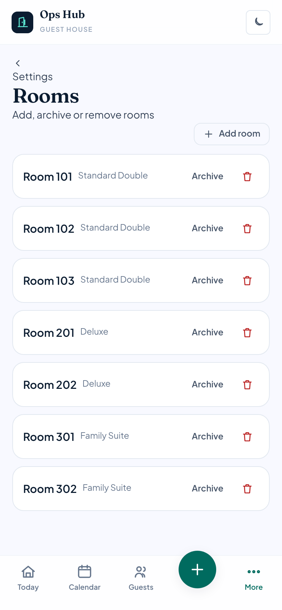
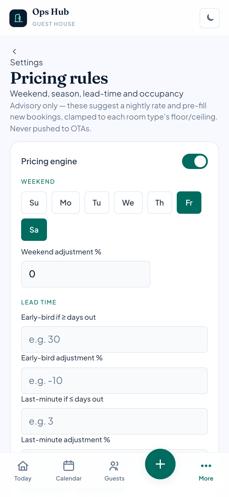
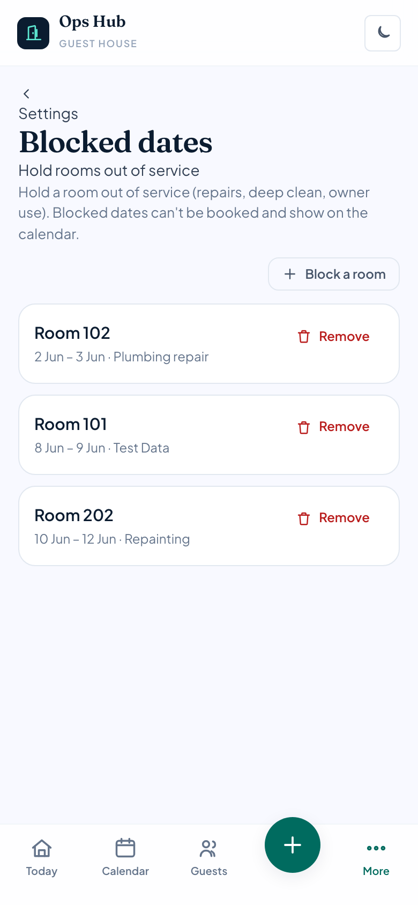
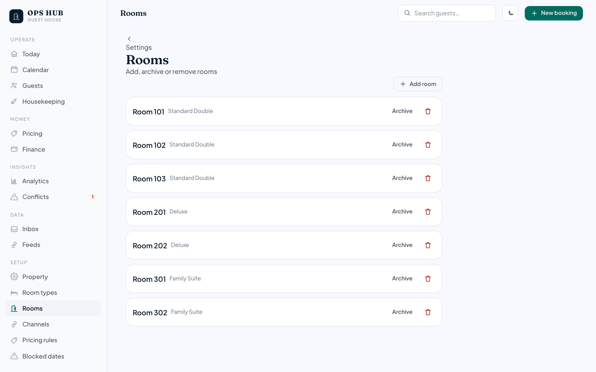
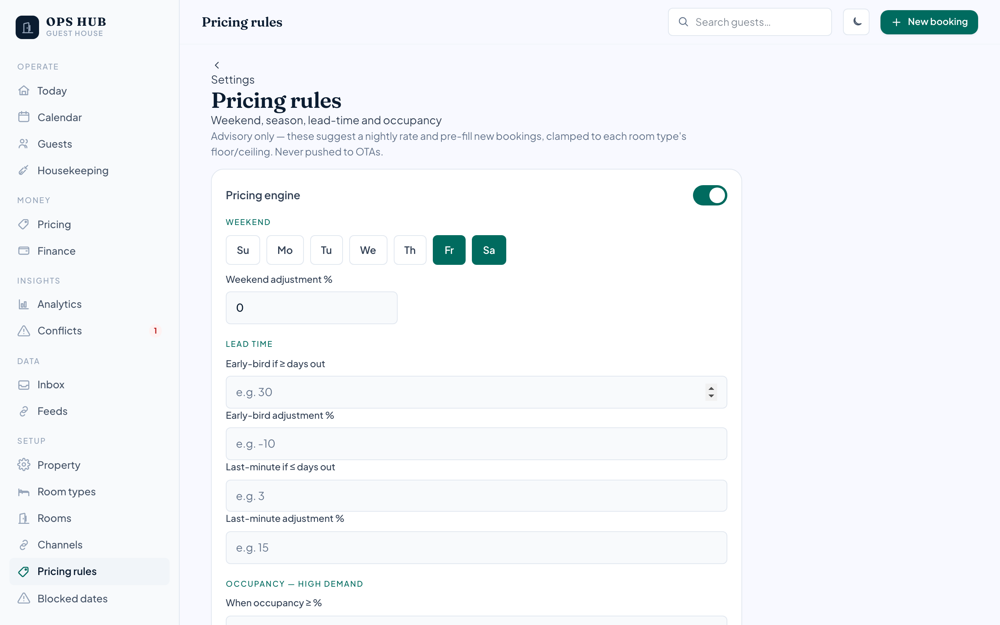
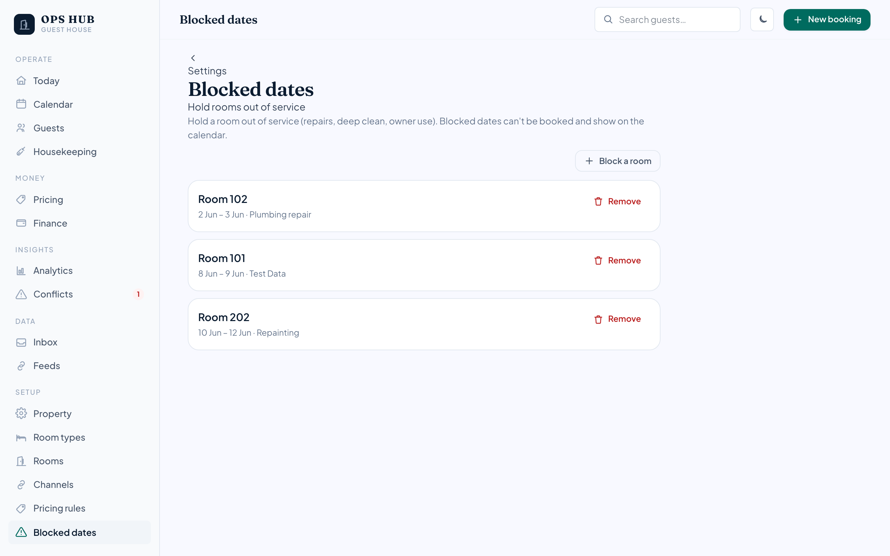
Everything you set up once and rarely change:
| Section | What you manage |
|---|---|
| Property | Name, address, GST number, check-in/out times, currency (used on invoices), your UPI ID for pay-links, and the ID rules: how strictly ID is required at check-in (block / warn / off), whether an ID number is required to take a booking, and how long to keep scanned ID documents before they auto-delete. |
| Users & roles | Add logins for your team and set each one’s role — owner, reception or housekeeping. “Money only for owners.” |
| Amenities | The facilities your property offers (Wi-Fi, parking, meals, pickup…), used by the community directory. |
| Cancellation & refunds | Your free-cancellation windows (e.g. 4 days normal / 2 days peak) that drive the refund workflow. |
| Trusted network | Your connect code, invites to/from nearby properties, and the per-peer switches for what you share (see Community network). |
| Community scam list / Bad-guest alerts | Report and verify shared scam numbers and evidence-backed bad-guest alerts; export your own. |
| Import data | Bring past guests & bookings over from a CSV (paste or upload); each row is created like a normal, conflict-checked booking. |
| Audit log | A record of sensitive actions (cancellations, refunds, blacklisting, user & consent changes) — who did what, and when. |
| Room types | Categories (Standard, Deluxe…) with base rate, max occupancy, and the rate floor/ceiling pricing stays within. |
| Rooms | Add a room, or Archive one to retire it (it leaves the calendar but its history is kept). Delete is only allowed for a room that was never booked. |
| Channels | Booking sources and their commission %. |
| Pricing rules | Turn the engine on/off; weekend days & uplift; early-bird / last-minute; busy-period pricing; and a Seasons & holidays list of date ranges with adjustments. |
| Maintenance blocks | Block a room for a date range with a comment (e.g. “Plumbing repair”). Blocked dates can’t be booked and show on the calendar. Remove a block when the work’s done. |
| Scam numbers | A list of known-bad phone numbers (with a reason). Add or remove entries here; when one of these numbers turns up on a new booking, the booking form shows a warning so you can verify before taking money. |
22Tips & FAQ
Common how-tos
- Block a room for repairs: Settings → Maintenance blocks → Block a room.
- Mark someone arrived/left: open their booking → Check in / Check out.
- Give a guest a bill: open the booking → Invoice → Print / Save PDF.
- See who owes money: Finance → Balances due.
- Retire an old room: Settings → Rooms → Archive (keeps its history).
- Stop a problem guest sneaking back: open the guest → turn on Blacklist with a reason.
- Find any booking fast: the Bookings tab → search by name, phone, room or channel.
- Flag a scam phone number: Settings → Scam numbers → add it with a reason (you’ll be warned next time it’s used).
- Record a foreign guest’s passport/visa (Form C): open the guest → the Foreign-national details section.
- Edit or delete something you added: most lists (staff, vendors, inventory, maintenance, tours) have an Edit button on each row, and a delete (✕ / Delete).
- Manage your team: the Staff screen — directory, shift roster, and today’s attendance.
- Refer a guest when you’re full: Referrals → send them to a connected peer (see Community network).
- Send a guest a pay-link: set your UPI ID in Settings → Property; the booking’s payment panel can then offer a tap-to-pay link.
Good to know
- Nothing is ever double-booked — the app prevents it.
- Availability is always live — it’s worked out from your bookings and blocks, never a number that can drift.
- Pricing is a suggestion — it never changes prices on the OTAs by itself.
- Cancelled bookings free their dates immediately for re-booking.
- ID is required to check a guest in (unless the owner relaxes it in Settings → Property).
- Patchy signal is fine — changes you make offline are saved and sync automatically when you reconnect; if a booking clashed while you were offline, the app tells you.
- What you can see depends on your role — reception and housekeeping don’t see money or setup.
- Changes you make are saved straight away and visible on every device.
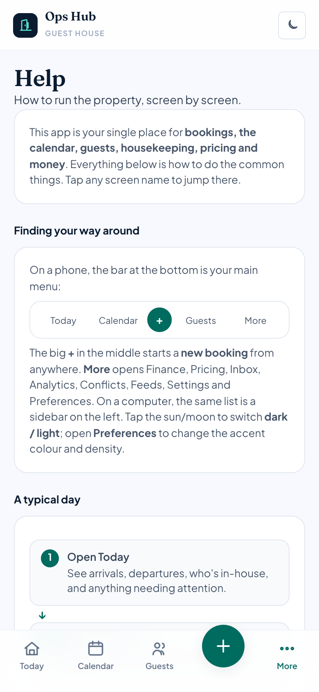
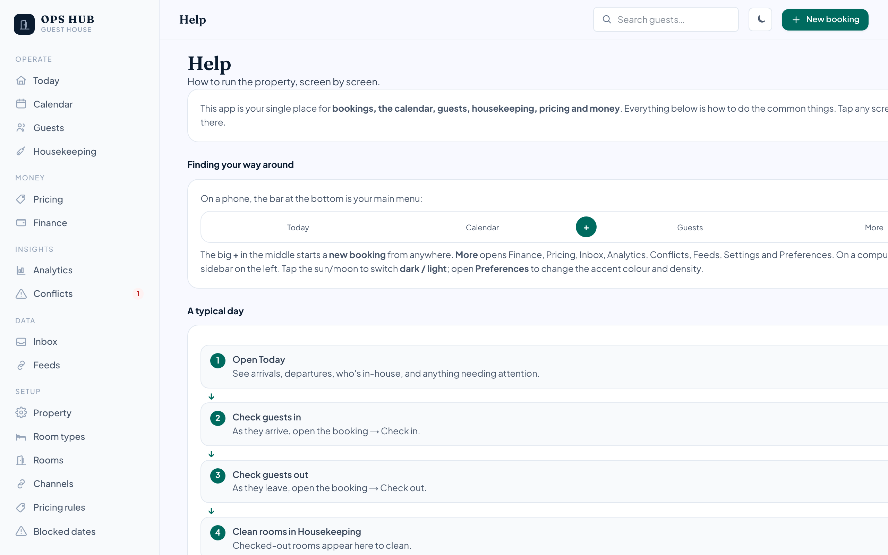
The built-in Help screen — a quick version of this guide, inside the app.